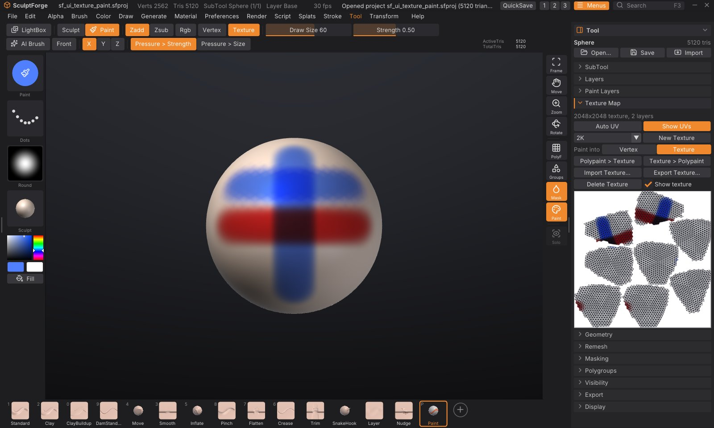

Texture painting
Texture painting puts the colour into an image laid over the model's UVs, instead of on its vertices. The detail you can paint then comes from the texture's resolution, not from how dense the mesh is: a 4K texture on a light, game-ready mesh holds pores, freckles and sharp decals that polypaint could only show on millions of polygons. Everything you know from polypaint still applies: the same Paint brush, colours, fills, symmetry, mask and paint layers with blend modes.


Start in one click#
Press P for the Paint brush (or turn on Rgb). While the SubTool has no texture, New Texture appears on the top shelf and in the Color palette. Click it: if the model has no UVs, SculptForge runs Auto UV first (in the background; the status bar shows its progress), then gives it a white texture (2K, or the size chosen in Tool > Texture Map) and switches painting to Texture. Paint away. The steps below do the same thing by hand, with more choices.
Paint a texture in four steps#
- Open Tool > Texture Map in the right tray.
- If the SubTool has no UVs (the sub-palette says "No UVs"), click Auto UV. SculptForge cuts the model into UV islands and packs them into the texture square. It works in the background with a progress bar; on a few hundred thousand triangles it takes seconds, on millions it can take a minute or more. Models imported with UVs (from ZBrush, Maya, Blender...) already have them: skip this step.
- Choose a size (1K, 2K, 4K or 8K; 2K is the default) and click New Texture. The model now carries a white texture, and painting goes into it: Texture lights up next to Vertex on the top shelf.
- Press P and paint. Draw Size, RGB Intensity, pen pressure, the stroke type, the alpha, symmetry and the mask work as they do for polypaint.
Click Show UVs to see the texture with the UV layout drawn over it, below the buttons. Paint on the model and watch the texture fill in.
Vertex or Texture#
When a SubTool has a texture, Vertex and Texture appear on the top shelf next to Rgb (and in the Color, Paint Layers and Texture Map palettes). They choose where paint goes:
- Texture: the Paint brush, Rgb while sculpting, Fill, Fill masked, Cavity, Clear and the Paint Layers palette work on the texture.
- Vertex: they work on the polypaint, exactly as before.
The model shows both: the polypaint multiplied by the texture, over the material. If paint looks as coarse as the mesh's polygons, it is going into the vertices: check that Texture is lit, and that the SubTool carries no old polypaint (Tool > Paint Layers, or Polypaint > Texture to move it into the texture). Texture paint itself is as sharp as the texture: a hard alpha gives the same texels on a two-triangle plane as on a dense mesh. Each SubTool keeps its own choice, saved in the project. Show texture (Texture Map, or the Color palette) hides the texture in the viewport without deleting it.
How texture painting works#
- Each texel under the brush gets its 3D position on the surface, so the falloff, the alpha and the brush size are the same as for polypaint, and a stroke looks the same whatever the UV layout.
- Front faces only: the brush never paints through a thin part onto its far side, and never on surfaces facing away from you.
- The mask keeps masked areas as they are, and hidden faces are never painted.
- Symmetry paints the mirrored side too, even where the two sides have different UV islands.
- Around every UV island the paint runs on a few texels into the empty space (padding), so seams don't show as thin lines when the texture is filtered or mipmapped.
- One stroke is one undo step. SculptForge stores only the 64x64-texel tiles the stroke touched, so undo stays light even on an 8K texture. Layer edits (new layer, fill, clear, merge, flatten, delete) also keep only the tiles they changed, and an empty or single-colour tile costs almost nothing. Only an edit that changes a whole painted layer at once, like clearing a fully painted Base, stores the full layer.
- Alt paints back towards white on Base, and erases on a paint layer, as with polypaint.
- C over the model picks the texture's colour under the cursor.
Paint layers on a texture#
Tool > Paint Layers works on the texture's own stack while painting goes into the texture: new layers, blend modes, opacity, visibility, lock, Merge down, Flatten, Clear and Fill layer behave exactly as described in Paint layers. Switch to Vertex and the palette shows the polypaint layers again; the two stacks are separate.
Convert between polypaint and texture#
| Button | What it does |
|---|---|
| Polypaint > Texture | Bakes the polypaint (all its layers, as shown) into the active texture layer. Makes a 2K texture if there is none |
| Texture > Polypaint | Sets the polypaint of every vertex to the texture's colour under it. Detail finer than the mesh is lost; vertices on a UV seam take the average of both sides |
Both are undoable. Polypaint > Texture is a quick way to move an existing polypainted sculpt onto a game mesh's texture after giving it UVs.
Import and export#
- Export Texture... saves the texture (every visible layer composited) as a PNG.
- Import Texture... loads a PNG, JPEG, TGA, BMP or PSD as the SubTool's texture (it replaces the texture's layers; undoable). The image is laid on the UVs as it is, so a texture made for these UVs in another app lines up.
-
Projects (
.sfproj) save the texture with all its layers, blend modes and settings. -
Exporting the model writes the texture next to it as a PNG and references it, so other apps pick it up: OBJ writes a
.mtlmaterial withmap_Kd; glTF/GLB embeds it as the base colour texture; USD binds a preview material that reads it; FBX and GoZ export write the PNG beside the file. See Exporting. - Delete Texture removes it (undoable); painting goes back to the vertices.
UVs and geometry#
- Auto UV replaces any existing UVs. If the SubTool already has a painted texture, the paint moves with it: every texel of the new layout takes the colour of the same point of the surface from the old one, for the Base and every texture layer (with their blend modes, opacity and names), and the islands get a padded border. It is one undo step: undo brings back the old UVs and the old texture exactly. Moving a 4K texture takes a fraction of a second on a million triangles (the unwrap itself takes longer; see below). The paint is resampled once, so very fine detail softens slightly (well under one texel).
- Subdividing, decimating, splitting and duplicating keep the UVs, so the texture stays on. Decimate leaves the vertices on UV seams in place, so the texture stays exact across seams.
- Keep Texture (on by default, shown under Tool > Remesh and Tool > Geometry > QRemesh when the SubTool has a texture): a voxel remesh or QRemesh builds a new surface without UVs, so SculptForge unwraps the result with Auto UV and projects the texture onto it from the old surface (each new texel takes the colour of the closest point of the old one), keeping every layer. It is part of the same undo step. It adds the time of an Auto UV of the result, so a voxel remesh of a painted SubTool runs in the background with a progress bar and Cancel. Turn it off to drop the texture instead (the status line says so). Paint finer than the new surface's detail is kept, since it lives in the texture.
- Merging SubTools keeps their textures: the merged SubTool gets Auto UVs and one texture (the size of the largest) holding each part's paint, with the texture layers flattened. Parts without a texture come out white.
- Auto UV on dense meshes: the islands are kept to about 4,000 triangles each, so a million-triangle sculpt unwraps in a quarter of a minute or so and gets a few hundred islands.
- UVs outside the 0-1 square (tiles, UDIMs) aren't painted.
Scripting#
| Command | What it does |
|---|---|
uv_auto | Unwrap the active SubTool (xatlas); resolution=4096 packs the islands for that texture size. A painted texture moves onto the new UVs (keep_texture=false leaves it as it was) |
texture_create size=2048 | Give the SubTool a texture (1024, 2048, 4096, 8192 or 1k...8k) and paint into it; from_polypaint=true starts from the polypaint |
paint_target target=texture | Where painting goes: vertex or texture |
texture_from_polypaint | Bake the polypaint into the active texture layer |
polypaint_from_texture | Copy the texture into the polypaint |
texture_export path=skin.png | Save the texture as a PNG |
texture_import path=skin.png | Load an image as the texture |
texture_delete | Remove the texture |
remesh, qremesh, subtool_merge_down and subtool_merge_visible keep a texture unless you add keep_texture=false.
paint_fill, paint_from_cavity, paint_clear and every paint_layer_* command work on the texture while paint_target is texture. See Scripting and automation.